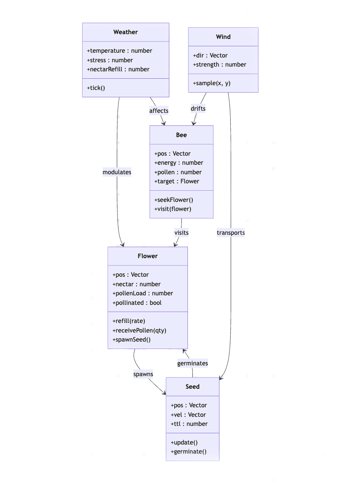

Modeling a digital ecosystem of bees, flowers, and wind using Object-Oriented Programming.
This project explores how natural systems can be represented in digital form through Object-Oriented Programming. The simulation models interactions between bees, flowers, wind, and seeds to reflect the emergent relationships found in nature. My goal was to create a synthetic environment that feels alive — where motion, growth, and change arise from simple coded rules.
Each element in the system is built as a separate class — Bee, Flower,
Wind, and Seed. Using a combination of attraction and randomness,
bees are guided by the wind to seek flowers, spreading pollen that generates new seeds.
Over time, seeds grow into new flowers, creating a continuous ecosystem loop.
The user can interact with the system by dragging the mouse to change wind direction and adjusting sliders to control wind strength and flower population. This user input introduces dynamic, emergent patterns that evolve differently each time the simulation runs.
The following diagram shows the relationships between system components:

🌀 Drag to change wind direction.
🎚️ Use sliders to adjust wind strength and flower count.